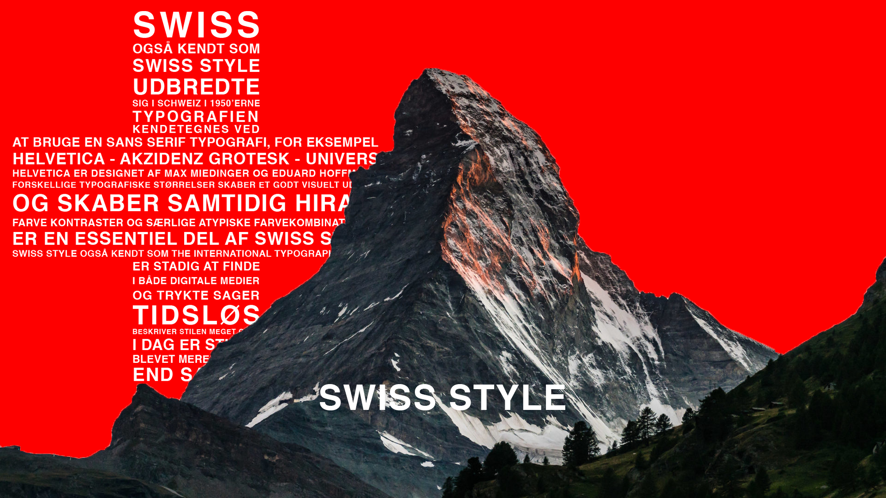

01.04.02
Responsive_site_v2
Grundlæggende web - gav en forståelse for fundamenterne af multimediedesign, her i blandt de grundlæggende værktøjer som der bliver brugt på uddannelsen. Dette indebære HTML og CSS, samt en forståelse for layout, komposition og gestaltlove.
Dette projekt er udarbejdelsen af et website, som skal repræsentere den grafiske stil Swiss Style. Opgaven er udarbejdet via brugen af de færdigheder, som er blevet tillært i første tema. Dette er for eksempel digitale værktøjer Photoshop og Indesign som er blevet brugt til moodboards og splash billede, men også analoge værktøjer som skitseringer og grundlæggende farvelære.
Link til opgave →
01.04.02 Moodboard